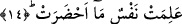

Bazı âlimlerin ifâdesine göre, buraya kadar on iki durum sayılmıştır. Bunların altı
tanesi bu dünyada gerçekleşir. Bir başka ifâdeyle sûra birinci üfürüşle ikinci üfürüş
arasında gerçekleşir. Bu altı özellik sûrenin başından altıncı âyetteki “denizler
kaynatıldığında” ifâdesine kadar olan kısımda sayılmaktadır. Oraya kadar sıralanan
durumlar içinde vahşi hayvanların toplanıp bir araya getirilmesi olayından maksad,
onların dünyanın dört bir tarafından toplanıp bir araya getirilmesi şartıyladır. Çünkü
âyeti “bu hayvanlar kısas için bir araya getirildi” şeklinde anlarsak, o zaman
hayvanların bir araya toplanmasından bahseden durum kıyametin dünya kısmıyla ilgili
olmuş olmaz. Kalan altı durum ise sura ikinci kez üflendikten sonra meydana gelecektir.
Übey b. Ka’b (r.a.) der ki: Kıyametten önce altı alâmet gözükür. İnsanlar çarşı-
pazarlarında iken birden bire güneşin ışığı kaybolur. Onlar bu vaziyette iken ansızın
yıldızlar dökülür. Tam bu esnâda bulunurlarken dağlar yıkılıp yerle bir olur ve sarsılıp
yerinde duramaz. İşte tam bu sırada, korkudan cinler insanlara ve insanlar da cinlere
sığınır. Hayvanlar, kuşlar ve vahşi hayvanlar dalga dalga birbirine karışır. İşte tam o
sırada cinler insanlara; ‘biz gidip size haber getireceğiz’ derler. Bunun üzerine denize
giderler ancak bir de ne görsünler; deniz alev alev tutuşmuş yanmaktadır. Onlar bu
durumda iken birden bire yer yedi kat dibine ve yedi kat göğe kadar yarılır. Ardından
kendilerini bir rüzgar yakalar ve hepsini öldürür.
14. Kişi neler getirdiğini öğrenmiş olacaktır.
Her nefis ne hazırladığını bilecektir. Bu ifâdede görüldüğü üzere “ma” iyelik zamirine
giden rabıt zamir hazfedilmiştir. Âyetteki “nefs/kişi” kelimesi genellik ifâde etmektedir.
Kelimenin genellik ifâde ettiğini, “Herkesin iyilik olarak yaptıklarını da kötülük
olarak yaptıklarını da karşısında hazır bulduğu günde (insan) isteyecek ki
kötülükleriyle kendisi arasında uzun bir mesâfe bulunsun” (Al-i İmran 3/30);
“Orada herkes geçmişte yaptıklarını karşısında bulur” (Yunus 10/30) gibi âyetlerden
de
çıkarabiliyoruz.
Âyetteki
“kişi”
kelimesiyle
“herkes”in
kasdedildiğini
anlaşılmaktadır.
Dil bilginleri elif-lam takısız kelimelerin olumlu cümlelerde genel anlam ifâde
etmediğini söylerler. Onlara göre böyle bir nekre kelime çeşit bildiren teklik ifâde eder.
Ancak bu kural da düzenli değildir. Kelimenin sonundaki tenvin kelimeye teklik anlamı
veriyor. Böylece şuna işâret olunuyor: Bunca nefis/kişi içinde bir tek kişi o gün ne
hazırladığını bilecek olduğuna göre o zaman herkesin yaptığı ameli düzgün yapması
gerekir. Çünkü herkesin teker teker önden ne hazırladığını bilen kişi konumuna
düşeceğinden korku duyması gerekir. Bu izahtan yola çıkarak “kişi” kelimesini genel
anlamda anlamak neden mantıklı olmasın? Çünkü herkes o gün ne hazırladığını